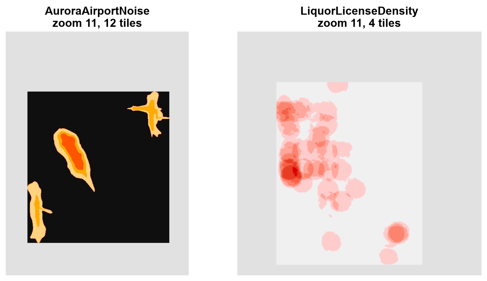
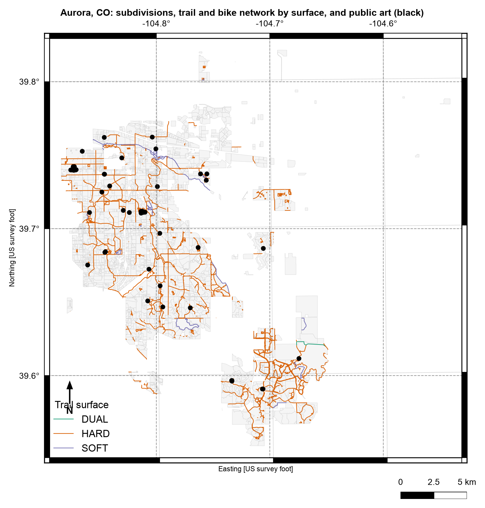
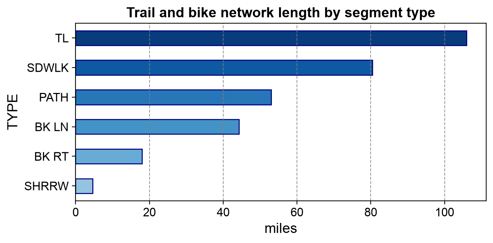
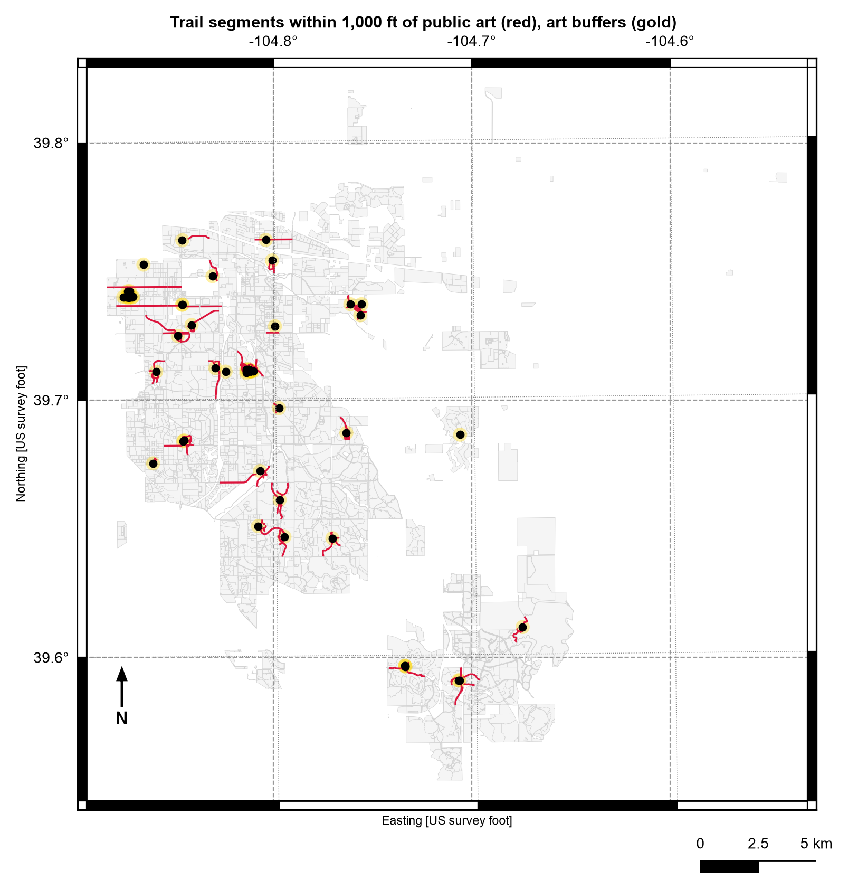

Remark
Please be aware that these lecture notes are accessible online in an ‘early access’ format. They are actively being developed, and certain sections will be further enriched to provide a comprehensive understanding of the subject matter.
3.3. GeoPackage and File Geodatabases#
3.3.1. Learning Objectives#
By the end of this section, you should be able to:
Explain how GeoPackage’s SQLite container overcomes Shapefile’s limitations.
Inspect a GeoPackage’s internal tables with plain SQLite, and explain what the main system tables do.
Read and write multi-layer GeoPackages with GeoPandas, list their layers with Fiona or pyogrio, and read only the part of a layer you need.
Describe the internal architecture of an Esri File Geodatabase and how it differs from a GeoPackage.
Distinguish spatial layers from attribute-only tables in a container, and convert a File Geodatabase to a GeoPackage.
Compare GeoPackage and File Geodatabase and choose between them for a given workflow.
Section Goal
Both GeoPackage and the Esri File Geodatabase solve the same problem — a single portable container that can hold many layers without Shapefile’s field-name, size, and single-geometry-type restrictions — but they make different trade-offs between open standards and enterprise GIS integration. This section covers both so that you can recognize either one and choose correctly between them.
3.3.2. GeoPackage#
GeoPackage (.gpkg) is an open, standards-based format defined by the Open Geospatial Consortium (OGC) [Open Geospatial Consortium, 2023]. It uses a SQLite database as its container, providing a single portable file with none of the Shapefile’s limitations. By its developers’ own estimate, SQLite [SQLite, 2026] is the most widely deployed database engine in the world: it needs no server, and a database is just a file. A GeoPackage is a SQLite database that follows agreed rules about which tables exist and how geometry is stored, so any GIS tool that knows the rules can read it.
3.3.2.1. Advantages over Shapefile#
Capability |
Shapefile |
GeoPackage |
|---|---|---|
Files |
Several files per layer |
Single file holding all layers, metadata, and spatial indexes |
Field names |
Truncated at 10 characters |
No length limit |
Layers |
One layer per set of files |
Many layers in one file, with different geometry types |
Size |
2 GB per component file |
No practical 2 GB limit (SQLite databases can grow far larger) |
Text |
Weak Unicode handling |
Full Unicode support |
Spatial index |
External, optional files |
Built in (an R-tree), so bounding-box queries are fast |
Raster data |
Not supported |
Tiled rasters can be stored alongside vector layers |
Data types |
Few; date only, no date-time |
Standard SQL types, including date-time |
3.3.2.2. Looking Inside a GeoPackage#
The best way to understand a GeoPackage is to open one. We use a real multi-layer file from Esri’s public sample-data repository [Esri, 2016]: AuroraCO.gpkg. It holds several vector layers (public art points, bike trails, subdivision polygons) plus two raster layers covering Aurora, Colorado. The first cell downloads it (only if it is not already on disk).
AuroraCO.gpkg: 9.5 MB, a single file
Because a GeoPackage is a SQLite database, Python’s built-in sqlite3 module can open it with no GIS library at all. The cell below reads two header values that identify the file, then lists its tables in three groups. The metadata tables, defined by the standard [Open Geospatial Consortium, 2023], are summarized in the next table.
Table |
Role |
|---|---|
|
The catalog: every layer in the file and its type ( |
|
Which column of each feature table holds the geometry, and its geometry type |
|
The coordinate reference systems used by the layers |
|
The layout of tiled raster layers: extent, zoom levels, and tile grid |
|
The spatial index of one layer (an SQLite R-tree) |
|
Optional extras: registered extensions, descriptive metadata, and human-readable column descriptions |
Application id: GPKG (these four letters identify a GeoPackage)
Version : 1.2.0
GeoPackage system tables (10):
gpkg_contents, gpkg_data_column_constraints, gpkg_data_columns, gpkg_extensions, gpkg_geometry_columns, gpkg_metadata, gpkg_metadata_reference, gpkg_spatial_ref_sys, gpkg_tile_matrix, gpkg_tile_matrix_set
Spatial index tables (R-tree) (12):
rtree_PublicArt_Shape, rtree_PublicArt_Shape_node, rtree_PublicArt_Shape_parent, rtree_PublicArt_Shape_rowid, rtree_Subdivisions_Shape, rtree_Subdivisions_Shape_node, rtree_Subdivisions_Shape_parent, rtree_Subdivisions_Shape_rowid, rtree_TrailBikeNetwork_Shape, rtree_TrailBikeNetwork_Shape_node, rtree_TrailBikeNetwork_Shape_parent, rtree_TrailBikeNetwork_Shape_rowid
Layer tables (5):
AuroraAirportNoise, LiquorLicenseDensity, PublicArt, Subdivisions, TrailBikeNetwork
The four letters GPKG in the SQLite header, together with version 1.2.0, identify the file as a GeoPackage without any GIS software. Its 27 tables fall into three groups: 10 standard system tables, 12 R-tree index tables (four for each of the three feature layers), and the 5 layers themselves.
The catalog tables tell you what the file contains without reading any layer. Here gpkg_contents lists five layers, three of vector features and two of tiles; gpkg_geometry_columns gives the geometry column and type of each feature layer; and gpkg_spatial_ref_sys holds the coordinate reference systems.
| table_name | data_type | srs_id | |
|---|---|---|---|
| 0 | AuroraAirportNoise | tiles | 3395 |
| 1 | PublicArt | features | 2232 |
| 2 | Subdivisions | features | 2232 |
| 3 | TrailBikeNetwork | features | 2232 |
| 4 | LiquorLicenseDensity | tiles | 3395 |
| table_name | column_name | geometry_type_name | srs_id | |
|---|---|---|---|---|
| 0 | PublicArt | Shape | POINT | 2232 |
| 1 | Subdivisions | Shape | MULTIPOLYGON | 2232 |
| 2 | TrailBikeNetwork | Shape | MULTILINESTRING | 2232 |
| srs_id | srs_name | organization | code | |
|---|---|---|---|---|
| 0 | -1 | Undefined Cartesian | NONE | -1 |
| 1 | 0 | Undefined Geographic | NONE | 0 |
| 2 | 2232 | NAD_1983_StatePlane_Colorado_Central_FIPS_0502... | EPSG | 2232 |
| 3 | 3395 | WGS_1984_World_Mercator | EPSG | 3395 |
| 4 | 4326 | GCS_WGS_1984 | EPSG | 4326 |
Three feature layers of three different geometry types (point, multipolygon, multilinestring) share one file, which a single Shapefile could not hold. They use EPSG:2232, a Colorado state-plane system, while the two raster layers use EPSG:3395 (World Mercator). gpkg_spatial_ref_sys also lists two placeholder definitions and EPSG:4326, which no layer uses.
Since the layers are ordinary SQL tables, you can also query their attributes with plain SQL. And each feature layer has a matching spatial-index table (an R-tree [Guttman, 1984]) with one entry per feature, which is what makes bounding-box reads fast. The cell below summarizes the trail network by type, and confirms that each index is complete.
| TYPE | segments | miles | |
|---|---|---|---|
| 0 | TL | 1051 | 106.0 |
| 1 | SDWLK | 1412 | 80.5 |
| 2 | PATH | 1547 | 53.0 |
| 3 | BK LN | 88 | 44.3 |
| 4 | BK RT | 37 | 18.0 |
| 5 | SHRRW | 9 | 4.6 |
PublicArt features: 55 spatial index entries: 55
Subdivisions features: 2875 spatial index entries: 2875
TrailBikeNetwork features: 4144 spatial index entries: 4144
Segment counts and mileage tell different stories: PATH has the most segments (1,547) but only 53 miles, while TL has 1,051 segments covering 106 miles, so segments vary widely in length. The six types add up to 306.4 miles. Each spatial index holds exactly one entry per feature (55, 2,875, and 4,144), so all three indexes are complete.
3.3.2.3. Raster Tiles Inside the Same File#
The two tiles layers show another capability Shapefile lacks. A tiled raster is stored as a pyramid: the same image at several zoom levels, cut into square tiles, each saved as an image in a table row. The matrix tables describe the grid, and the layer table holds one row per tile. Tiles are stored only where data exist, so a layer can define many zoom levels yet store tiles for only a few.
The first cell summarizes the pyramid of each raster layer. The second reassembles the tiles at the highest zoom level into a mosaic by pasting each tile at its column and row position (the gray margin is just the drawing canvas; the dark and pale rectangles are the raster tiles themselves).
| layer | zoom_levels_defined | min_zoom | max_zoom | |
|---|---|---|---|---|
| 0 | AuroraAirportNoise | 12 | 0 | 11 |
| 1 | LiquorLicenseDensity | 12 | 0 | 11 |
AuroraAirportNoise tiles stored per zoom level: {10: 6, 11: 12}
LiquorLicenseDensity tiles stored per zoom level: {11: 4}
Both rasters define 12 zoom levels (0 to 11) but store tiles for only the deepest one or two: 18 tiles for the noise layer (6 at zoom 10 and 12 at zoom 11) and just 4 for the liquor layer. The pyramid is mostly empty, because tiles exist only where data exist.


Fig. 3.9 The tiles at the highest zoom level of the two raster layers, reassembled into mosaics (the gray margin is the drawing canvas).#
Fig. 3.9 shows that the tables hold real map images. The noise layer’s 12 tiles form three separate zones of nested contour bands, and the liquor-license layer’s 4 tiles form a density surface that is concentrated toward the western side. Both are pixels stored as table rows, so unlike the vector layers they cannot be queried by attribute; the file simply carries them alongside the vector data.
3.3.2.4. Reading and Writing GeoPackage in Python#
In practice you will use GeoPandas [Jordahl et al., 2020] rather than raw SQL. As the earlier version of this section advised, list the layers first, since layer names vary by source file and a guessed name such as "buildings" will fail. Two libraries can list them: Fiona (names only) and pyogrio (names and geometry types). Note that both list only the vector layers: the two raster layers in the catalog do not appear.
The second cell reads every vector layer and summarizes it. Pay attention to two columns: the unit, because this CRS (a Colorado state plane system) measures in feet, not degrees or meters; and the longest field name, because it reveals something about the file’s history.
Fiona : ['PublicArt', 'Subdivisions', 'TrailBikeNetwork']
pyogrio: [['PublicArt', 'Point'], ['Subdivisions', 'MultiPolygon'], ['TrailBikeNetwork', 'MultiLineString']]
| layer | features | geometry | CRS | unit | longest field name | |
|---|---|---|---|---|---|---|
| 0 | PublicArt | 55 | Point | EPSG:2232 | US survey foot | 10 |
| 1 | Subdivisions | 2875 | MultiPolygon | EPSG:2232 | US survey foot | 10 |
| 2 | TrailBikeNetwork | 4144 | MultiLineString | EPSG:2232 | US survey foot | 10 |
Every field name in this file is 10 characters or fewer (for example SUBDIVISIO and ARTWORK_TI), even though GeoPackage allows any length. That pattern suggests the layers were converted from Shapefiles: converting to GeoPackage stops further truncation, but it does not restore names that were already cut. The same lesson applies to every format conversion; always check the schema of the source, not only the destination.
The CRS unit also matters for every measurement. Lengths and areas computed from these geometries are in feet and square feet. A useful sanity check is to compare computed trail length with the layer’s own MILES field: if the unit handling is right, the two should agree closely.
Sum of the MILES field : 306.4
Sum of computed length (miles): 306.4
Median segment ratio : 1.000
The length computed from the geometry matches the layer’s own MILES field (306.4 miles in total, median segment ratio 1.000), which confirms that the layers are in feet and that the conversion to miles is right.
3.3.2.5. Reading Only What You Need#
A GeoPackage lets the database do the filtering, so you do not have to load a whole layer to use part of it. GeoPandas can pass an attribute filter (where, SQL syntax), a column list, or a bounding box (bbox, which uses the built-in spatial index) to the file. Note that the box is in the layer’s own CRS, here feet.
Whole layer : 4144 segments, 13 columns
where TYPE = 'SDWLK' : 1412 segments
columns NAME, TYPE, MILES : 4144 segments, 4 columns
bbox of the public-art points : 3528 segments
The database does the filtering. The attribute filter returns 1,412 segments, matching the SDWLK count in the SQL summary above; the column list keeps all 4,144 segments but only 4 of 13 columns; and the bounding box of the art points keeps 3,528 segments (85% of the network), because the artworks are spread across most of the city and so is the box that encloses them.
3.3.2.6. Mapping the Layers Together#
Because all three vector layers share one CRS, they can be drawn together without any reprojection. The map shows subdivision polygons as a backdrop, the trail and bike network colored by surface, and the public-art points. The bar chart summarizes network length by segment type, using the MILES field.


Fig. 3.10 Aurora, Colorado: subdivisions, trail and bike network by surface, and public-art points (black), drawn together from one GeoPackage.#
The three layers in Fig. 3.10 line up without any reprojection because they share EPSG:2232. Hard-surface trails (orange) make up most of the network, and the network is densest in the north-west and south-east parts of the city. The 55 artworks are few, and in places they overlap into dark clumps where several works share nearly the same site.


Fig. 3.11 Trail and bike network length by segment type.#
Fig. 3.11 repeats the SQL summary from earlier as a chart: types TL and SDWLK together carry about 61% of the network’s 306 miles.
3.3.2.7. Building a New Multi-Layer GeoPackage#
Writing uses to_file with driver="GPKG". The layer argument names the layer, and writing a new name adds a layer to the same file rather than replacing it. To show this, the next cell derives two new layers (a 1,000-foot buffer around each artwork, and the trail segments that touch a buffer) and stores them together with the original points in one new GeoPackage. The layers have three different geometry types, which a single Shapefile could not hold. The derived layer also gets a long field name, to show that GeoPackage keeps it intact.
aurora_analysis.gpkg: 0.5 MB
Layers: [['PublicArt', 'Point'], ['ArtBuffers', 'Polygon'], ['TrailsNearArt', 'MultiLineString']]
Field names kept: ['trail_length_in_feet']
603 of 4144 trail segments (46.8 of 306.4 miles) lie within 1,000 ft of public art
The derived GeoPackage stores a point, a polygon, and a multilinestring layer in 0.5 MB and keeps the 20-character field name trail_length_in_feet intact. In total, 603 of the 4,144 trail segments (46.8 of 306.4 miles, about 15%) intersect an art buffer.


Fig. 3.12 Trail segments that touch a 1,000-foot buffer around public art (red), with the buffers in gold.#
In Fig. 3.12, the red segments cluster tightly around the gold buffers, but a few long straight lines at the left edge run far beyond them. intersects selects every whole segment that touches a buffer, so the 46.8 miles reported above is an upper bound on the trail length actually within 1,000 feet. Clipping the segments to the buffers would give the exact figure.
3.3.2.8. Write Modes: Replace, Append, and New Layers#
Writing to an existing GeoPackage depends on the layer name and the mode argument:
What you write |
Result |
|---|---|
A new layer name |
A new layer is added; existing layers are untouched |
An existing layer name, default |
That layer is replaced; other layers are untouched |
An existing layer name, |
The new features are appended to that layer |
The cell below confirms each rule on a scratch file, printing the number of features after each step.
1. write 5 features -> 5 features
2. write 3 to the same layer -> 3 features (replaced)
3. append 2 features -> 5 features (appended)
4. write a different layer name-> ['art', 'other'] layers
GeoPackage is the recommended modern replacement for Shapefile in most file-based workflows that do not require proprietary ESRI features.
3.3.3. Esri File Geodatabase#
A File Geodatabase (.gdb) is Esri’s directory-based container for spatial data,
designed to overcome the same Shapefile limitations as GeoPackage, but built for the
ArcGIS ecosystem rather than as an open standard. Where a Shapefile spreads one layer
across several files, a File Geodatabase is the reverse: one directory holds many
layers, relationships, and indexes together.
3.3.3.1. Advantages over Shapefile#
Capability |
Shapefile |
File Geodatabase |
|---|---|---|
Field names |
Truncated at 10 characters |
Unlimited length |
Date/time storage |
Date only |
Full date-time types |
Relationships |
None |
Referential integrity between tables |
Topology rules |
None |
Enforceable topology (e.g., no gaps/overlaps) |
Versioning / multi-user editing |
Not supported |
Supported (with ArcGIS Enterprise) |
Storage efficiency |
One geometry type per file |
Compressed, multiple types per dataset |
3.3.3.2. Internal Architecture#
A File Geodatabase is a directory containing several binary component files. The layout is opaque by design — Esri can change the internals without changing how you open the geodatabase. The files are named by number, not by layer: a catalog table inside the directory records which number belongs to which layer, so you cannot find “Subdivisions” by looking at file names.
File pattern |
Role |
|---|---|
|
Actual data storage (geometry and attributes) |
|
Index of records within a |
|
Index management metadata |
|
Attribute indexes (present when attribute indexes are defined) |
|
Spatial indexes |
|
Free-space tracking for reuse after deletions (present after edits) |
|
Small bookkeeping files holding geodatabase-level state |
3.3.3.3. Reading File Geodatabases in Python#
GeoPandas and Fiona read File Geodatabases through GDAL/OGR’s OpenFileGDB driver [GDAL/OGR contributors, 2026], which does not require ArcGIS to be installed. Since GDAL 3.6 the same driver can also create and write basic geodatabases, which lets us build a small one right here instead of starting with a very large download.
The cell below copies the three Aurora vector layers into a new geodatabase, plus one attribute-only table (trail miles by type) to show that containers can hold tables without geometry. It then lists the resulting directory. Notice the numbered file names, and that the directory holds many files where the GeoPackage held one.
aurora_demo.gdb is a directory holding 31 files. The first few names:
['a00000001.gdbtable', 'a00000001.gdbtablx', 'a00000002.gdbtable', 'a00000002.gdbtablx', 'a00000003.gdbtable', 'a00000003.gdbtablx']
Files by type: {'.gdbtable': 11, '.gdbtablx': 11, '.gdbindexes': 4, '.spx': 3, 'gdb': 1, 'timestamps': 1}
Total size: 3.6 MB
The geodatabase is a directory of 31 files with numbered names. Of its 11 .gdbtable files, only four hold our layers (three spatial layers and the attribute table); the rest are the geodatabase’s own catalog tables. The three .spx files are spatial indexes, one for each spatial layer, and the attribute table has none.
Not every layer in a container is spatial. The helper below lists every layer of a GeoPackage or geodatabase and labels each as a spatial layer or an attribute table, using the geometry type that pyogrio reports (empty for a table). This matters in practice: the original USGS example in this section read the first layer of a real geodatabase and got a table of identifiers with no geometry, because that layer happened to be an attribute table.
| layer | kind | geometry | features | CRS | |
|---|---|---|---|---|---|
| 0 | PublicArt | spatial | Point | 55 | EPSG:2232 |
| 1 | Subdivisions | spatial | MultiPolygon | 2875 | EPSG:2232 |
| 2 | TrailBikeNetwork | spatial | MultiLineString | 4144 | EPSG:2232 |
| 3 | TrailMilesByType | attribute table | - | 6 | - |
The attribute table TrailMilesByType is flagged as having no geometry and no CRS, while the three spatial layers keep EPSG:2232 and their original feature counts.
A round-trip check confirms that the geodatabase holds the same data as the GeoPackage it was built from, by comparing feature counts and bounding boxes. The last lines compare the sizes of the two containers for the same three vector layers. The sizes depend on the content and on how each driver writes data, so treat them as one observation rather than a general rule.
PublicArt same feature count: True same bounds: True
Subdivisions same feature count: True same bounds: True
TrailBikeNetwork same feature count: True same bounds: True
GeoPackage, 3 vector layers : 9.7 MB (1 file)
Geodatabase, same layers + 1 table: 3.6 MB (31 files)
Feature counts and bounding boxes agree for all three layers, so the geodatabase holds the same data as the GeoPackage. In this run the geodatabase is the smaller container (3.6 MB versus 9.7 MB), but, as noted above, that is one observation rather than a rule.
3.3.3.4. Converting a Geodatabase to a GeoPackage#
A common workflow is the one described at the start of this chapter: keep the original delivery, convert it to an open container for analysis, and record what you did. The function below copies every layer, spatial or not, from a geodatabase into a GeoPackage, then lists the result.
| layer | kind | geometry | features | CRS | |
|---|---|---|---|---|---|
| 0 | PublicArt | spatial | Point | 55 | EPSG:2232 |
| 1 | Subdivisions | spatial | MultiPolygon | 2875 | EPSG:2232 |
| 2 | TrailBikeNetwork | spatial | MultiLineString | 4144 | EPSG:2232 |
| 3 | TrailMilesByType | attribute table | - | 6 | - |
The converted GeoPackage lists the same four layers as the geodatabase, including the attribute table, with identical feature counts and CRS.
The USGS National Hydrography Dataset [U.S. Geological Survey, 2026] is the kind of source that arrives as a File Geodatabase. You can get a real multi-layer one from the USGS National Hydrography
Dataset —
download the HU4 subregion 0301 bundle directly at
NHD_H_0301_HU4_GDB.zip
(other HU4 codes are listed on The National Map Downloader
if you want a different region). It is a large download. Unzip it into the data folder — you’ll get a real .gdb directory with
both a Hydrography and a WBD feature dataset, each holding several layers. The cell below applies the same helper to it if it is present, and maps the HU4 watershed boundary layer, which is spatial. (We tested the helper on the demonstration geodatabase above, not on the full NHD download.)
NHD geodatabase not found; skipping. The helper above works the same way on any geodatabase.
3.3.3.5. Limitations#
Proprietary format: full read/write support, versioning, and topology editing require ArcGIS; open-source tools can read most File Geodatabases but have limited write support.
Directory delivery: unlike GeoPackage, a File Geodatabase cannot be shared as a single file — it must be zipped or copied as a whole directory.
Tooling assumption: workflows built around a File Geodatabase often assume access to Esri software downstream, which can be a barrier for open-source pipelines.
3.3.4. Comparing Shapefile, GeoPackage, and File Geodatabase#
Aspect |
Shapefile |
GeoPackage |
File Geodatabase |
|---|---|---|---|
Container |
Multiple files |
Single file (SQLite) |
Single directory |
Standard |
De facto, proprietary |
OGC open standard |
Esri proprietary |
Field names |
≤ 10 characters |
Unlimited |
Unlimited |
Geometry types per layer |
One |
One per layer, many layers |
One per layer, many layers |
Relationships / topology |
None |
Limited |
Full (with ArcGIS) |
Best open-source support |
Excellent |
Excellent |
Read-heavy (OpenFileGDB) |
Choosing is usually a question of who produces the data and who consumes it:
Scenario |
Prefer |
|---|---|
New output for people using unknown tools, the web, or mobile apps |
GeoPackage |
An open-source or reproducible analysis pipeline |
GeoPackage |
Data delivered by an ArcGIS-based agency |
Read the File Geodatabase, then convert to GeoPackage for analysis |
Enforced topology, relationship classes, or versioned multi-user editing |
File Geodatabase, inside ArcGIS |
A recipient who explicitly requires a Shapefile |
Shapefile, with short field names; check the written file |
Practice
Pick one layer from AuroraCO.gpkg and write it three times: to a Shapefile, to a GeoPackage, and to a File Geodatabase. Add a column with a 25-character name first. Compare the files produced, the field names after reading each one back, and the size of each. Then use summarize_container to list the layers of the GeoPackage and the geodatabase.
3.3.5. Key Terms#
Term |
Meaning |
|---|---|
GeoPackage |
An OGC open standard that stores layers in a single SQLite file. |
SQLite |
A serverless database engine that keeps a whole database in one file. |
|
The GeoPackage catalog table listing every layer and its type. |
R-tree |
The tree-shaped spatial index used to find features by bounding box quickly. |
Tile pyramid |
A raster stored at several zoom levels, each cut into square tiles. |
File Geodatabase |
Esri’s directory-based container for spatial data, relationships, and topology. |
OpenFileGDB |
The GDAL driver that reads (and, in recent versions, writes) File Geodatabases without ArcGIS. |
Attribute table |
A layer with rows and columns but no geometry. |
Feature dataset |
A folder inside a geodatabase that groups related feature classes under one CRS. |
3.3.6. Review Questions#
List four Shapefile limitations that GeoPackage removes.
How can you tell that a file is a GeoPackage without opening it in GIS software?
What do
gpkg_contentsandgpkg_geometry_columnseach tell you?All field names in a GeoPackage are 10 characters or fewer. What is the most likely explanation, and does converting a Shapefile to GeoPackage fix it?
What happens when you write to an existing layer name with the default mode, and what does
mode="a"do instead?Why can you not find a layer called
Subdivisionsby looking at the file names in a File Geodatabase?A geodatabase layer loads into GeoPandas with no geometry column. What is the likely cause, and how would you check for it?
For each of the following, choose GeoPackage or File Geodatabase and justify it: a dataset for a web app, a topology-enforced parcel editing system in ArcGIS Enterprise.
3.3.7. Summary#
GeoPackage and the Esri File Geodatabase both remove Shapefile’s field-name, size, and single-geometry-type limitations by packaging many layers into one container, but GeoPackage does so as an open, SQLite-based standard while File Geodatabase does so as an Esri-native directory format with stronger enterprise features (relationships, topology, versioning) when used inside ArcGIS. A GeoPackage is a transparent SQLite database: you can inspect its catalog, query its attributes with SQL, rely on its built-in spatial index, and store vector layers, attribute tables, and raster tiles side by side. Prefer GeoPackage for new, tool-agnostic outputs; expect File Geodatabase when a source system is ArcGIS-based, and list a container’s layers before assuming that any one of them is spatial.
The next section covers two more formats you will encounter in government and web-map data exchange: KML and GML.